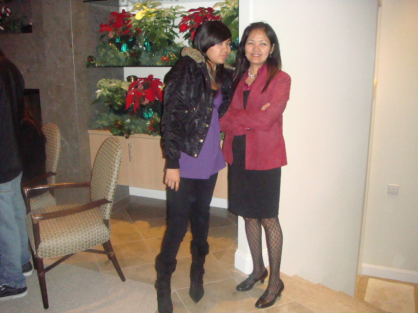
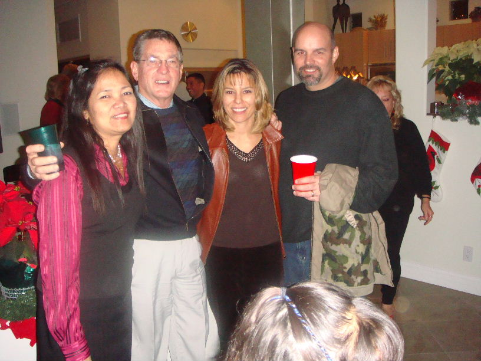

Sun, 18 May 2008 12:17:24 -0700 (PDT)
From: Renee T
Subject: some pics
Here are my pics ...
One is with my husband with friends and the other one is with my daughter. We were in Huntington Beach attending a Christmas boat parade in our friend's house, in Dec. 2007.
Regards to all!
Renee


Mon Jan 14, 2008 Re: [qcshs-75] regards everyone!!! Thanks so much to everyone, especially those who sent me email/notes... Kind of busy this past week, didn't email you back soon.. By the way, 'Julia' I call you Joy. Special mention kita in my note. I believe nobody calls you 'Joy" anymore? See my note below. I think you were the one who forgot our good old days coz its very vivid in my memories, ha ha ha. You used to live in Proj. 8 (so does Luz P, right?) and we live in Frisco. So, ayan do you remember na? Do you not prefer to be called 'Joy'? Anyway, I will try very hard to get a chance to go North of CA, OK. Ikaw din, try to come down to Southern CA. Please get in touch. Renee ----------------------------- from Julia L > > Hi Renee, > > I am glad you stil remember me! Akala ko forget mo na > ako kasi hindi mo inilista ang pangalan ko... Joke > lang ! I definitley want to meet you.Let me know when > you are coming to SF or to your Uncle. We should see > each other. All our Bay area classmates will gather > to meet you. Caloy and Lolo are here in the Bay area. > Owie is in Roseville ( Sacramento). > > > Happy New year and hope you and your family a Healthy > and prosperous new year. > > Keep in touch! > > Julia > > ---------------------------- from Renee T > > > Hi Everyone: > > Thanks to all who acknowledged and welcomed me to this group. > > Thanks Annie, I remember you very much and I can't forget how you > > looked like and you haven't changed that much! > > Thanks to Art too and > > good to hear from you. I remember how tall you are > > then, until now of course. > > I am still trying to figure out how to upload some > > pics so you can see how I look like (scary!) > > I don't see any announcements nor any events coming > > up. Do you have plans for a gathering??? > > I'm excited to hear from all of you... > > Regards to Joy. I would like to see you I hope you haven't forgotten > > me and some "good" old days and your sisters who also studied at > > Science. We also did some togetherness in UP, remember? > > To "Owie" or Rowena, I still have never forgotten your mom who used to be our > > teacher back elementary days.... > > It's interesting fate has dumped us here in CA so we can see each > > other again (after 32-33 years huh?). > > Julia, Annie and Owie, you all still look wonderful and pretty... > > Julia - are you still in SF? My dad lives close to you, in San Jose. > > I might give him a visit and we'll see each other. > > Or you may visit me here in SO.CAL, (to all QCSHS '75 grads..)you're > > all very welcome. We live very close to Disneyland..if you want to go > > there, come drop by! Richen are you still in LA? > > Send me a note.. I went to LA Airport lots of times last year to drop off/pick up my > > daughter and son when they visited the Phil and come back and when I > > went out of the country. > > These are all for now... Hope to hear from you.... > > Renee T. > > > > --------------------------- from Graceann A > > > > > > WELCOME RENEE!!! > > > Annie A here from Las Vegas. Hope you still remember me =) > > > > > > Annie